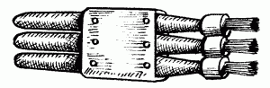
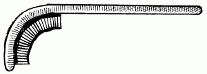

Полезные советы.

Иногда одна и та же краска, упакованная в несколько банок, имеет различные оттенки. Как правило, это связано с тем, что краски расфасованы не из одной, а из нескольких партий. Если же слить краску в одну емкость и тщательно перемешать, то получится однородный окрасочный состав одного цвета.
Если подготовка к ремонту ведется уже давно и краски приобретались за несколько месяцев до начала малярных работ, вполне возможно, что их структура несколько изменится. Это объясняется тем, что пигменты с наполнителями оседают, а связующий компонент, наоборот, всплывает вверх. Именно поэтому краску перед употреблением перемешивают. Делать это можно вручную, вооружившись обыкновенной деревянной палочкой, а можно и облегчить задачу с помощью электродрели, вставив в нее специально изготовленную из проволоки мешалку, как в миксере.
По фактуре красочного слоя различаются глянцевые и матовые масляные краски. Масляными красками пользуются в том случае, когда хотят, во-первых, придать поверх-ности декоративность и, во-вторых, защитить стену от чрезмерного увлажнения и других нежелательных внешних воздействий. Глянцевые пленки применяют во втором случае. А вот матовое покрытие можно получить и из обычной масляной краски. Для этого нужно всего лишь снизить количество связующего в пленке, заменив его растворителем, который затем испарится. Одновременно следует ввести в краску различные матирующие добавки, разведенные в растворителе. В качестве добавок можно применять пчелиный или искусственный воск.
Запачканные масляным лаком руки не отмываются даже щеткой с мылом и горячей водой. Удалить остатки лака с кожи рук поможет любой растворитель. Однако, если дома такового не оказалось, можно воспользоваться другим средством: втереть в загрязненную кожу обычное растительное масло, а затем смыть его водой с мылом или питьевой содой.
Если вас раздражает запах масляной краски, не выветривающийся в течение нескольких недель, нужно поставить в комнату несколько банок с соленой водой. После этого запах быстро исчезнет. Если запах краски впитала кожа рук, то его можно удалить, вымыв руки в теплом растворе порошка горчицы.
Иногда после долгого хранения краски на ее поверхности образуется пленка. В данном случае есть два варианта решения проблемы: либо, перемешав краску, процедить ее через марлю, либо, накрыв банку капроновым чулком, обмакивать кисть прямо через него. Второй способ представляется более удобным.
Перед окраской поверхностей масляной краской влажную кисть нужно тщательно просушить.
Если не имеется широкой плоской кисти, можно при помощи небольших полосок фанеры соединить две или три узкие кисти между собой (рис. 17).

Рис. 17. Изготовление широкой кисти из трех узких.
С помощью старой зубной щетки, изогнутой над пламенем, можно легко окрасить труднодоступные места, например трубы, расположенные близко к стенам (рис. 18).

Рис. 18. Кисть для окраски труб.
Качество закрепления абразива на шлифовальной шкурке проверяют путем перегиба рабочей стороны внутрь. Если бумажная основа не расслаивается, а зерна не высыпаются, такая шкурка вполне пригодна для применения.